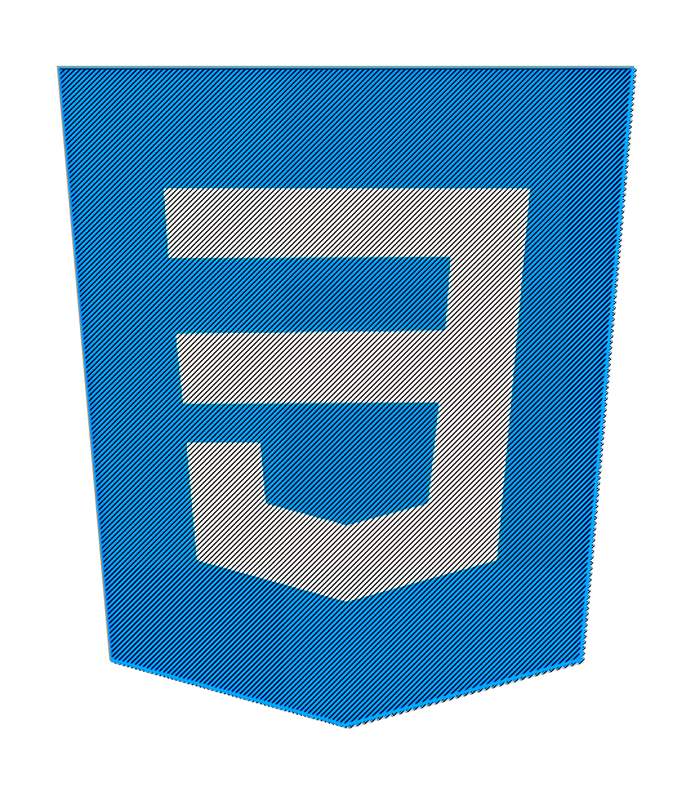
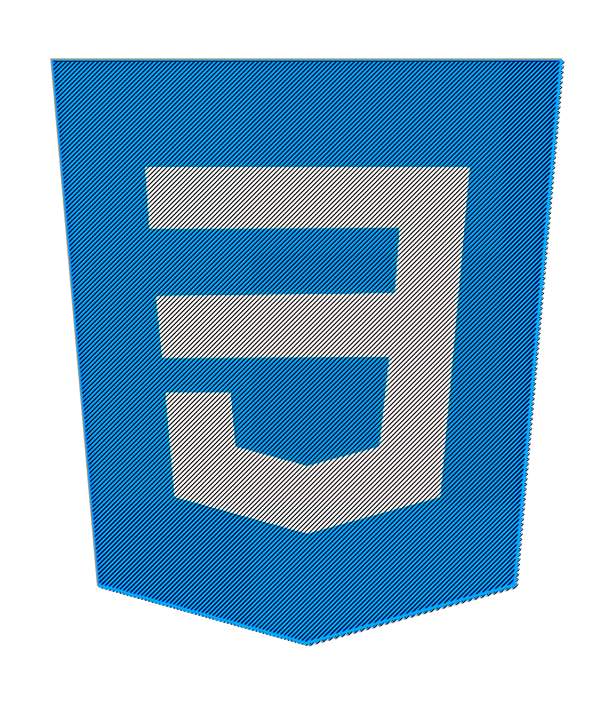

Mon Portfolio
 



Développeur Web FullStack. Je réalise des projets mêlant Front et Back. Sites vitrines,
Applications ou mini-jeux, je m'exerce sur toutes sortes de projets.
Découvrez-les sans plus tarder.